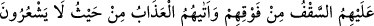

KİBİRLİLERİN YERİ
NE KÖTÜDÜR!
26. Onlardan öncekiler de (peygamberlere) hîle yapmışlardı. Sonunda Allah da
onların binalarını temellerinden söktü üstlerindeki tavan da tepelerine çöktü. Bu
azap onlara, fark edemedikleri bir yerden geldi.
27. Sonra kıyâmet gününde (Allah), onları rezil eder ve der ki: “Kendileri
hakkında (müminlere) düşman kesildiğiniz ortaklarım nerede?” Kendilerine ilim
verilmiş olanlar derler ki: “Şüphesiz bugün rezillik ve kötülük kâfirleredir.”
28. Kendilerine haksızlık ederlerken meleklerin canlarını aldıkları kimseler: Biz
hiçbir kötülük yapmıyorduk, diyerek teslim olurlar. “Hayır, Allah, sizin
yaptıklarınızı elbette çok iyi bilendir.”
29. “O halde, içinde ebedî kalacağınız cehennemin kapılarından girin!
Kibirlenenlerin yeri ne kötüdür!”
“Onlardan öncekiler de (peygamberlere) hîle yapmışlardı.” Yâni daha öncekiler
gibi Mekkeliler de hîle yaptılar. Bu hîle, başkalarının değil kendilerinin helâk sebebi
oldu. Çünkü kim kardeşine tuzak kurmak için kuyu kazarsa, oraya yüzüstü kendisi düşer.
el-Medârik’te der ki: Cumhûr, bu âyette kasdedilen kişinin, Bâbil’de yüksek kule inşa
eden Nemrud b. Kenan olduğu görüşündedir. Bu yüksek bir kasır idi. Yüksekliği beş bin
arşın, genişliği iki fersah idi. Nemrud bunu, kendi zannınca semadaki İbrâhim (a.s.)’ın
ilâhına muttalî olmak ve onunla savaşmak için bina etmişti.
“Sonunda Allah da onların binalarını temellerinden söktü” yâni Allah onların
binalarını temelinden ya da zaafa uğraması sebebiyle binâyı ayakta tutan sütunlarından